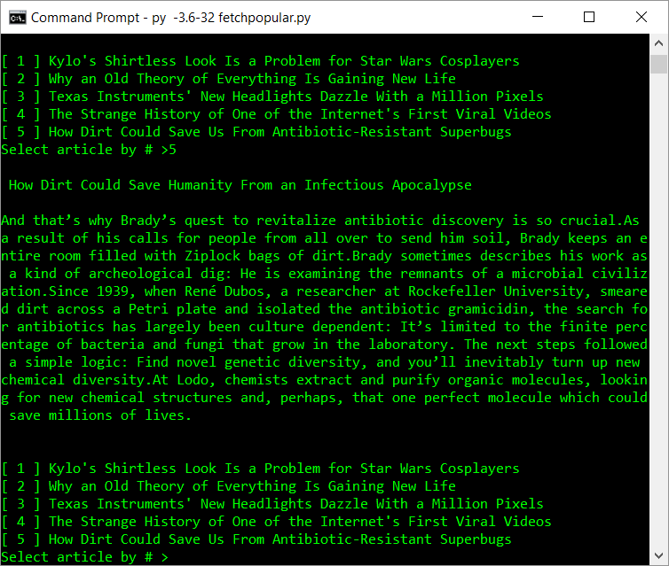
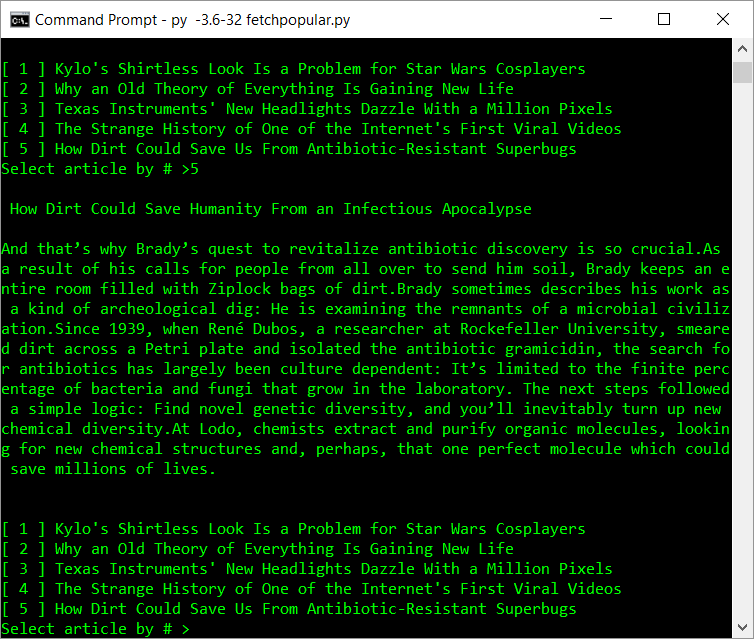
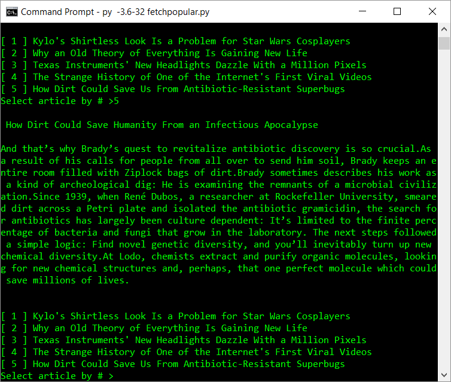

WIRED Summarizer
This uses Python, along with BeautifulSoup to grab the data from the "hot" section of WIRED.com. This, along with the TextRank algorithm, provides a fast summary of the article.
 

This uses Python, along with BeautifulSoup to grab the data from the "hot" section of WIRED.com. This, along with the TextRank algorithm, provides a fast summary of the article.
